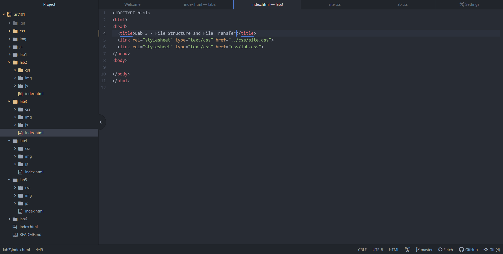
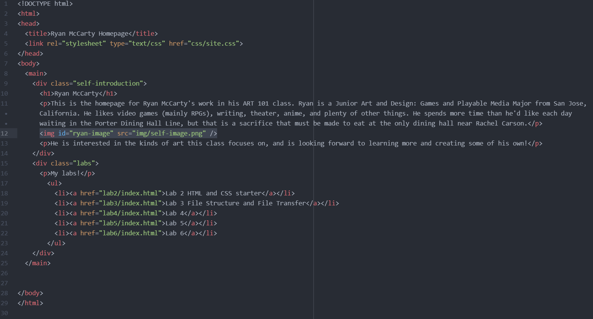
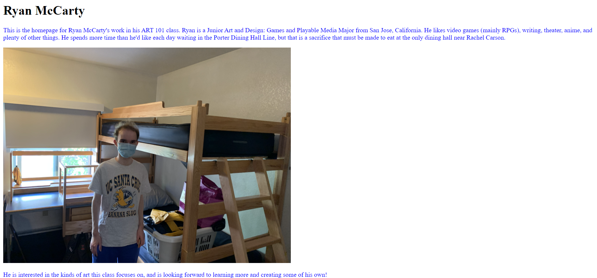
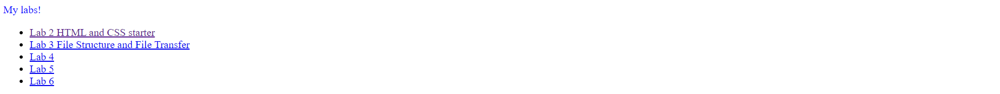

The focus of this lab was helping me understand my file structures and files within my project folder, as well as practicing HTML through making my homepage and this index page.
Since pretty much all of the file structure was already created through the template, I was really only editing files that already existed, which wasn't very difficult. However, I did have to look up how to do the bulleted list for the homepage index.html, since I didn't quite remember how to do it.
I made 2 html files in this project, the main homepage for my labs in this class, and this html file describing this specific lab in detail. Here are the screenshots of the different parts of my assignment.
First, my file structure.
Then, the html file for my homepage.
Lastly, the screenshots of the homepage website.
 